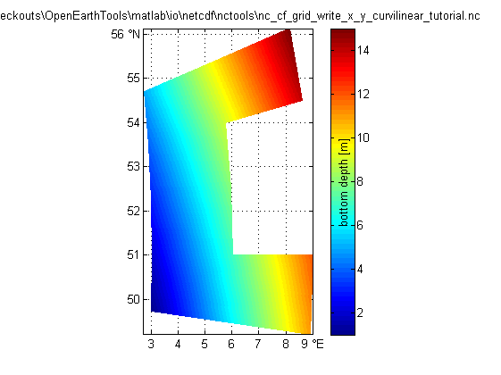

Contents
- Create netCDF-CF of curvilinear x-y grid
- Define meta-info: global: x,y matrices <> lat,lon matrices
- Define dimensions/coordinates
- Define variable (define some data)
- 1.a Create netCDF file
- 1.b Add overall meta info
- 2 Create matrix span dimensions
- 3.a Create coordinate variables: x and y
- 3.b Create coordinate variables: coordinate system: epsg
- 3.c Create coordinate variables: longitude
- 3.d Create coordinate variables: latitude
- 3.e Create coordinate variables: coordinate system: WGS84 default
- 4 Create dependent variable
- 5.a Create all variables with attributes
- 5.b Fill all variables
- 6 Check file summary
- 7.a Load the data: using the variable names from nc_dump
- 7.b Load the data: using standard_names and coordinate attribute
- 7.c Load the data: using a dedicated function developed for grids
Create netCDF-CF of curvilinear x-y grid
example of how to make a netCDF file with CF conventions of a variable that is defined on a grid that is curvilinear in a x-y coordinate system. In this case the dimensions (m,n) do not coincide with the coordinate axes.
This case is partly described in: http://cf-pcmdi.llnl.gov/documents/cf-conventions/1.4/cf-conventions.html#grid-mappings-and-projections as "Horizontal Coordinate Reference Systems, Grid Mappings, and Projections".
An example of a curvi-linear x,y grid is for instance the grid of a regional general circulation model such as Delft3D, ROMS or POM that has been ddesigned to follow coastal feartures smoothly.
^ latitude (degrees_north) ^ y(m)
| x | x
| ncols / \ | ncols / \
| / /\ \ coordinate / /\ \
| / /15\ \ transformation / /15\ \
| x /10 \ \ <==============> x /10 \ \
| <5 14\ \ | <5 14\ \
| \ 9 \ \ | \ 9 \ \
| \4 \ | | \4 \ |
| \ \ | | \ \ |
| )3 8 xx) | nrows | )3 8 xx) |
| / / | | / / |
| /2 / | | /2 / |
| / 7 / / | / 7 / /
| <1 12/ / | <1 12/ /
| \6 / / | \6 / /
| \11/ / | \11/ /
| \/ x | \/ x
| |
+----------------------> longitude +----------------------> x
(degrees_east) (m)Note that ncBrowse does not contain plot support for curvi-linear grids, so ncBrowse will display the same rectangular plot as for the netCDF file created by NC_CF_GRID_WRITE_LAT_LON_ORTHOGONAL_TUTORIAL, albeit with different axes annotations (col/row instead of lat/lon).
%See also: SNCTOOLS, NC_CF_GRID, NC_CF_GRID_WRITE, % NC_CF_GRID_WRITE_LAT_LON_ORTHOGONAL_TUTORIAL, % NC_CF_GRID_WRITE_LAT_LON_CURVILINEAR_TUTORIAL, % NC_CF_GRID_WRITE_X_Y_ORTHOGONAL_TUTORIAL, % NC_CF_STATIONTIMESERIES % % This tool is part of <a href="http://www.OpenEarth.eu">OpenEarthTools</a> under the <a href="http://www.gnu.org/licenses/gpl.html">GPL</a> license.
Define meta-info: global: x,y matrices <> lat,lon matrices
OPT.title = ''; OPT.institution = ''; OPT.source = ''; OPT.history = ['tranformation to netCDF: $HeadURL: https://repos.deltares.nl/repos/OpenEarthTools/trunk/matlab/io/netcdf/nctools/nc_cf_grid_write_x_y_curvilinear_tutorial.m $']; OPT.references = ''; OPT.email = ''; OPT.comment = ''; OPT.version = ''; OPT.acknowledge =['These data can be used freely for research purposes provided that the following source is acknowledged: ',OPT.institution]; OPT.disclaimer = 'This data is made available in the hope that it will be useful, but WITHOUT ANY WARRANTY; without even the implied warranty of MERCHANTABILITY or FITNESS FOR A PARTICULAR PURPOSE.';
Define dimensions/coordinates
exactly same grid same nc_cf_grid_write_lat_lon_curvilinear_tutorial.m
lon1 = [2 4 6]; lat1 = [50 51 52 53 54]; [lon2,lat2] = ndgrid(lon1,lat1); ang = [-15 0 15 30 45;-15 0 15 30 45;-15 0 15 30 45]; OPT.lat = lat2 + sind(ang).*lon2./2; OPT.lon = lon2 + cosd(ang).*lon2./2; clear lon1 lon2 lat1 lat2 OPT.ncols = size(OPT.lon,1); OPT.nrows = size(OPT.lat,2); OPT.lat_type = 'single'; % 'single', 'double' for high-resolution data (eps 1m) OPT.lon_type = 'single'; % 'single', 'double' for high-resolution data (eps 1m) OPT.epsg.code = 32631; % epsg code of local projection OPT.wgs84.code = 4326; % epsg code of global grid % http://www.epsg-registry.org/ % in the case of a grid defined in a local x-y % projection, the properties of the grid in a WGS84 % lat,lon system do not have to be specified here, but % can be retrieved from the log of the coordinate % transformation carried out by convertCoordinates: % get (x,y) associated with each vertex (lat,lon), note order (OPT.lon,OPT.lat ... [OPT.x,OPT.y,log] = convertCoordinates(OPT.lon,OPT.lat,'CS1.code',OPT.wgs84.code,'CS2.code',OPT.epsg.code);
Define variable (define some data)
OPT.val = [1 2 3 4 5;6 7 8 9 10;11 12 nan 14 15]; % use ncols as 1st array dimension to get correct plot in ncBrowse (snctools swaps for us) OPT.varname = 'depth'; % free to choose: will appear in netCDF tree OPT.units = 'm'; % from UDunits package: http://www.unidata.ucar.edu/software/udunits/ OPT.long_name = 'bottom depth';% free to choose: will appear in plots OPT.standard_name = 'sea_floor_depth_below_geoid'; % or 'altitude' OPT.val_type = 'single'; % 'single' or 'double' OPT.fillvalue = nan;
1.a Create netCDF file
ncfile = fullfile(fileparts(mfilename('fullpath')),[mfilename,'.nc']); nc_create_empty (ncfile)
1.b Add overall meta info
http://cf-pcmdi.llnl.gov/documents/cf-conventions/1.4/cf-conventions.html#description-of-file-contents
nc_attput(ncfile, nc_global, 'title' , OPT.title); nc_attput(ncfile, nc_global, 'institution' , OPT.institution); nc_attput(ncfile, nc_global, 'source' , OPT.source); nc_attput(ncfile, nc_global, 'history' , OPT.history); nc_attput(ncfile, nc_global, 'references' , OPT.references); nc_attput(ncfile, nc_global, 'email' , OPT.email); nc_attput(ncfile, nc_global, 'comment' , OPT.comment); nc_attput(ncfile, nc_global, 'version' , OPT.version); nc_attput(ncfile, nc_global, 'Conventions' , 'CF-1.4'); nc_attput(ncfile, nc_global, 'CF:featureType', 'Grid'); % https://cf-pcmdi.llnl.gov/trac/wiki/PointObservationConventions nc_attput(ncfile, nc_global, 'terms_for_use' , OPT.acknowledge); nc_attput(ncfile, nc_global, 'disclaimer' , OPT.disclaimer);
2 Create matrix span dimensions
http://cf-pcmdi.llnl.gov/documents/cf-conventions/1.4/cf-conventions.html#dimensions
nc_add_dimension(ncfile, 'col', OPT.ncols); % !!! use this as 1st array dimension to get correct plot in ncBrowse (snctools swaps for us) nc_add_dimension(ncfile, 'row', OPT.nrows); % !!! use this as 2nd array dimension to get correct plot in ncBrowse (snctools swaps for us) % You might insert a vector 'col' that runs max(x):-dx:min(x) to have % the arcGIS ASCII file approach of having upper-left corner of % the data matrix at index (1,1) rather than the default of having the % lower-left corner of the data matrix at index (1,1). % nc_add_dimension(ncfile, 'time', 1); % if you would like to include more instances of the same grid, % you can optionally use 'time' as a 3rd dimension. see % nc_cf_stationTimeSeries_write_tutorial for info on time.
3.a Create coordinate variables: x and y
clear nc;ifld = 1; nc(ifld).Name = 'x'; nc(ifld).Nctype = nc_type(OPT.lon_type); nc(ifld).Dimension = {'col','row'}; % !!! nc(ifld).Attribute( 1) = struct('Name', 'long_name' ,'Value', 'x Rijksdriehoek'); nc(ifld).Attribute(end+1) = struct('Name', 'units' ,'Value', 'm'); nc(ifld).Attribute(end+1) = struct('Name', 'standard_name' ,'Value', 'projection_x_coordinate'); % standard name nc(ifld).Attribute(end+1) = struct('Name', 'actual_range' ,'Value', [min(OPT.x(:)) max(OPT.x(:))]); nc(ifld).Attribute(end+1) = struct('Name', 'coordinates' ,'Value', 'lat lon'); nc(ifld).Attribute(end+1) = struct('Name', 'grid_mapping' ,'Value', 'epsg'); ifld = ifld + 1; nc(ifld).Name = 'y'; nc(ifld).Nctype = nc_type(OPT.lat_type); nc(ifld).Dimension = {'col','row'}; % !!! nc(ifld).Attribute( 1) = struct('Name', 'long_name' ,'Value', 'y Rijksdriehoek'); nc(ifld).Attribute(end+1) = struct('Name', 'units' ,'Value', 'm'); nc(ifld).Attribute(end+1) = struct('Name', 'standard_name' ,'Value', 'projection_y_coordinate'); % standard name nc(ifld).Attribute(end+1) = struct('Name', 'actual_range' ,'Value', [min(OPT.y(:)) max(OPT.y(:))]); nc(ifld).Attribute(end+1) = struct('Name', 'coordinates' ,'Value', 'lat lon'); nc(ifld).Attribute(end+1) = struct('Name', 'grid_mapping' ,'Value', 'epsg');
3.b Create coordinate variables: coordinate system: epsg
http://www.epsg-registry.org/
ifld = ifld + 1; nc(ifld).Name = 'epsg'; nc(ifld).Nctype = nc_int; nc(ifld).Dimension = {}; nc(ifld).Attribute = struct('Name', ... {'name',... 'grid_mapping_name', ... 'semi_major_axis', ... 'semi_minor_axis', ... 'inverse_flattening', ... 'latitude_of_projection_origin', ... 'longitude_of_projection_origin', ... 'false_easting', ... 'false_northing', ... 'scale_factor_at_projection_origin', ... 'comment'}, ... 'Value', ... {log.CS2.name,... log.proj_conv2.method.name, ... log.CS2.ellips.semi_major_axis, ... log.CS2.ellips.semi_minor_axis, ... log.CS2.ellips.inv_flattening, ... log.proj_conv2.param.value(strcmp(log.proj_conv2.param.name,'Latitude of natural origin' )),... log.proj_conv2.param.value(strcmp(log.proj_conv2.param.name,'Longitude of natural origin' )),... log.proj_conv2.param.value(strcmp(log.proj_conv2.param.name,'False easting' )),... log.proj_conv2.param.value(strcmp(log.proj_conv2.param.name,'False northing' )),... log.proj_conv2.param.value(strcmp(log.proj_conv2.param.name,'Scale factor at natural origin')),... 'value is equal to EPSG code'});
3.c Create coordinate variables: longitude
http://cf-pcmdi.llnl.gov/documents/cf-conventions/1.4/cf-conventions.html#longitude-coordinate
ifld = ifld + 1; nc(ifld).Name = 'lon'; nc(ifld).Nctype = nc_type(OPT.lon_type); nc(ifld).Dimension = {'col','row'}; % !!! nc(ifld).Attribute( 1) = struct('Name', 'long_name' ,'Value', 'longitude'); nc(ifld).Attribute(end+1) = struct('Name', 'units' ,'Value', 'degrees_east'); nc(ifld).Attribute(end+1) = struct('Name', 'standard_name' ,'Value', 'longitude'); nc(ifld).Attribute(end+1) = struct('Name', 'actual_range' ,'Value', [min(OPT.lon(:)) max(OPT.lon(:))]); nc(ifld).Attribute(end+1) = struct('Name', 'coordinates' ,'Value', 'x y'); % 'lat lon'); nc(ifld).Attribute(end+1) = struct('Name', 'grid_mapping' ,'Value', 'wgs84');
3.d Create coordinate variables: latitude
http://cf-pcmdi.llnl.gov/documents/cf-conventions/1.4/cf-conventions.html#latitude-coordinate
ifld = ifld + 1; nc(ifld).Name = 'lat'; nc(ifld).Nctype = nc_type(OPT.lat_type); nc(ifld).Dimension = {'col','row'}; % !!! nc(ifld).Attribute( 1) = struct('Name', 'long_name' ,'Value', 'latitude'); nc(ifld).Attribute(end+1) = struct('Name', 'units' ,'Value', 'degrees_north'); nc(ifld).Attribute(end+1) = struct('Name', 'standard_name' ,'Value', 'latitude'); nc(ifld).Attribute(end+1) = struct('Name', 'actual_range' ,'Value', [min(OPT.lat(:)) max(OPT.lat(:))]); nc(ifld).Attribute(end+1) = struct('Name', 'coordinates' ,'Value', 'x y'); % 'lat lon'); nc(ifld).Attribute(end+1) = struct('Name', 'grid_mapping' ,'Value', 'wgs84');
3.e Create coordinate variables: coordinate system: WGS84 default
global ellispes: WGS 84, ED 50, INT 1924, ETRS 89 and the upcoming ETRS update etc.
http://cf-pcmdi.llnl.gov/documents/cf-conventions/1.4/cf-conventions.html#grid-mappings-and-projections
http://cf-pcmdi.llnl.gov/documents/cf-conventions/1.4/cf-conventions.html#appendix-grid-mappingsifld = ifld + 1; nc(ifld).Name = 'wgs84'; % preferred nc(ifld).Nctype = nc_int; nc(ifld).Dimension = {}; nc(ifld).Attribute = struct('Name', ... {'name',... 'semi_major_axis', ... 'semi_minor_axis', ... 'inverse_flattening', ... 'comment'}, ... 'Value', ... {log.CS1.name,... log.CS1.ellips.semi_major_axis, ... log.CS1.ellips.semi_minor_axis, ... log.CS1.ellips.inv_flattening, ... 'value is equal to EPSG code'});
4 Create dependent variable
http://cf-pcmdi.llnl.gov/documents/cf-conventions/1.4/cf-conventions.html#variables
Parameters with standard names:
http://cf-pcmdi.llnl.gov/documents/cf-standard-names/standard-name-table/current/ The dependent variable has initially been defined on a
curvi-linear grid in a local projection. This grid is also
available as a curvi-linear grid in (lat,lon) space. However,
the corodinates attribuite can only point to one set of coordinates.
To fulfill the CF standard, we connect the variable to the lat,lon
grid. There is no standard way to connect to the local grid as well.
An option might be the what has been apllied above: connect the (lat ,lon)
grid to the local grid (x,y) and vv, so at least there is a machine
readable connection. In addition, here as specify a non-standard
coordinates2 attribute. ifld = ifld + 1;
nc(ifld).Name = OPT.varname;
nc(ifld).Nctype = nc_type(OPT.val_type);
nc(ifld).Dimension = {'col','row'}; % {'time','col','row'}
nc(ifld).Attribute( 1) = struct('Name', 'long_name' ,'Value', OPT.long_name );
nc(ifld).Attribute(end+1) = struct('Name', 'units' ,'Value', OPT.units );
nc(ifld).Attribute(end+1) = struct('Name', '_FillValue' ,'Value', OPT.fillvalue );
nc(ifld).Attribute(end+1) = struct('Name', 'actual_range' ,'Value', [min(OPT.val(:)) max(OPT.val(:))]);
nc(ifld).Attribute(end+1) = struct('Name', 'coordinates' ,'Value', 'lat lon');
nc(ifld).Attribute(end+1) = struct('Name', 'coordinates2' ,'Value', 'x y');
nc(ifld).Attribute(end+1) = struct('Name', 'grid_mapping' ,'Value', 'epsg');
if ~isempty(OPT.standard_name)
nc(ifld).Attribute(end+1) = struct('Name', 'standard_name' ,'Value', OPT.standard_name);
end
5.a Create all variables with attributes
for ifld=1:length(nc) nc_addvar(ncfile, nc(ifld)); end
5.b Fill all variables
nc_varput(ncfile, 'x' , OPT.x ); nc_varput(ncfile, 'y' , OPT.y ); nc_varput(ncfile, 'epsg' , OPT.epsg.code ); nc_varput(ncfile, 'lon' , OPT.lon ); nc_varput(ncfile, 'lat' , OPT.lat ); nc_varput(ncfile, 'wgs84' , OPT.wgs84.code); nc_varput(ncfile, OPT.varname , OPT.val );
6 Check file summary
nc_dump(ncfile);
netCDF e:\Temp\tp10b47dd6_f8f5_4f3a_8a47_33768e5af4ab\nc_cf_grid_write_x_y_curvilinear_tutorial.nc {
dimensions:
col = 3 ;
row = 5 ;
variables:
// Preference 'PRESERVE_FVD': false,
// dimensions consistent with ncBrowse, not with native MATLAB netcdf package.
single x(col,row), shape = [3 5]
x:long_name = "x Rijksdriehoek"
x:units = "m"
x:standard_name = "projection_x_coordinate"
x:actual_range = 481128 929333
x:coordinates = "lat lon"
x:grid_mapping = "epsg"
single y(col,row), shape = [3 5]
y:long_name = "y Rijksdriehoek"
y:units = "m"
y:standard_name = "projection_y_coordinate"
y:actual_range = 5.46907e+006 6.2314e+006
y:coordinates = "lat lon"
y:grid_mapping = "epsg"
int32 epsg([]), shape = [1]
epsg:name = "WGS 84 / UTM zone 31N"
epsg:grid_mapping_name = "Transverse Mercator"
epsg:semi_major_axis = 6.37814e+006
epsg:semi_minor_axis = 6.35675e+006
epsg:inverse_flattening = 298.257
epsg:latitude_of_projection_origin = 0
epsg:longitude_of_projection_origin = 3
epsg:false_easting = 500000
epsg:false_northing = 0
epsg:scale_factor_at_projection_origin = 0.9996
epsg:comment = "value is equal to EPSG code"
single lon(col,row), shape = [3 5]
lon:long_name = "longitude"
lon:units = "degrees_east"
lon:standard_name = "longitude"
lon:actual_range = 2.70711 9
lon:coordinates = "x y"
lon:grid_mapping = "wgs84"
single lat(col,row), shape = [3 5]
lat:long_name = "latitude"
lat:units = "degrees_north"
lat:standard_name = "latitude"
lat:actual_range = 49.2235 56.1213
lat:coordinates = "x y"
lat:grid_mapping = "wgs84"
int32 wgs84([]), shape = [1]
wgs84:name = "WGS 84"
wgs84:semi_major_axis = 6.37814e+006
wgs84:semi_minor_axis = 6.35675e+006
wgs84:inverse_flattening = 298.257
wgs84:comment = "value is equal to EPSG code"
single depth(col,row), shape = [3 5]
depth:long_name = "bottom depth"
depth:units = "m"
depth:_FillValue = NaN
depth:actual_range = 1 15
depth:coordinates = "lat lon"
depth:coordinates2 = "x y"
depth:grid_mapping = "epsg"
depth:standard_name = "sea_floor_depth_below_geoid"
//global attributes:
:title = ""
:institution = ""
:source = ""
:history = "tranformation to netCDF: $HeadURL: https://repos.deltares.nl/repos/OpenEarthTools/trunk/matlab/io/netcdf/nctools/nc_cf_grid_write_x_y_curvilinear_tutorial.m $"
:references = ""
:email = ""
:comment = ""
:version = ""
:Conventions = "CF-1.4"
:CF:featureType = "Grid"
:terms_for_use = "These data can be used freely for research purposes provided that the following source is acknowledged: "
:disclaimer = "This data is made available in the hope that it will be useful, but WITHOUT ANY WARRANTY; without even the implied warranty of MERCHANTABILITY or FITNESS FOR A PARTICULAR PURPOSE."
}
7.a Load the data: using the variable names from nc_dump
Da.dep = nc_varget(ncfile,'depth'); Da.lat = nc_varget(ncfile,'lon'); Da.lon = nc_varget(ncfile,'lat')
Da =
dep: [3x5 double]
lat: [3x5 single]
lon: [3x5 single]
7.b Load the data: using standard_names and coordinate attribute
depname = nc_varfind(ncfile,'attributename', 'standard_name', 'attributevalue', 'sea_floor_depth_below_geoid') Db.z = nc_varget(ncfile,depname); coords = nc_attget(ncfile,depname,'coordinates'); [ax1,coords] = strtok(coords); ax2 = strtok(coords); if strcmpi(nc_attget(ncfile,ax1,'standard_name'),'latitude') Db.lat = nc_varget(ncfile,ax1); Db.lon = nc_varget(ncfile,ax2) else Db.lat = nc_varget(ncfile,ax2); Db.lon = nc_varget(ncfile,ax1) end
depname =
depth
Db =
z: [3x5 double]
lat: [3x5 single]
lon: [3x5 single]
7.c Load the data: using a dedicated function developed for grids
[Dc,Mc] = nc_cf_grid(ncfile,OPT.varname)
Dc =
lon: [3x5 single]
lat: [3x5 single]
depth: [3x5 double]
Mc =
lon: [1x1 struct]
lat: [1x1 struct]
depth: [1x1 struct]
